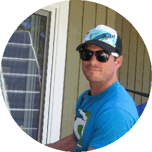

Marc Windle
Software Engineer with an affinity for Web Development
Experience
Experience

Amazon
Technical Program Manager
(full-time)
Feb '13 - Present
Financial Ledgers and Accounting Systems
- Worked on projects providing platform capabilities to automate payments and accounting activities for various Amazon businesses.
- Responsibilities include software design, scheduling, and project management.
- Managed a multi-team architectural improvement project that improved accounting accuracy, reduced operational burden, and reduced coupling between the financial platforms and business systems.

Microsoft
Program Manager
(full-time)
Sep '08 – Feb '13
SharePoint Online
- Worked for four and a half years as a technical Program Manager at Microsoft building the SharePoint Online (SPO) cloud service (part of Office 365) from the ground up. I helped the service grow from an idea to a globally-scaled cloud service with multiple data centers, machine counts in the tens of thousands, and customers in the millions.
- Proposed, designed, and managed development of a data replication solution to achieve disaster recovery objectives for customer SharePoint data.
- Broad range of design and project management experience covering areas such as high availability, disaster recovery, traffic routing, deployment, upgrade, and patching. Listed as inventor on ten U.S. software design patents (nine pending) for my technical design work. Check out http://tinyurl.com/ape2eft for patent details.
- Recipient of a Gold Star award for the design and implementation of a traffic routing optimization that allowed us to ship on time and save $1M+ in hardware expenses.
- Gained substantial experience in the area of commercial software and services development, executing as a program manager for multiple milestones and cycles, shipping real products and services to real customers.

BlackBerry
Project Coordinator
(intern)
May '06 – Aug '07
Handheld Program Management
- Managed the full lifecycle of internal software systems from inception through to maintenance.
- Worked with cross-functional teams throughout the organization to gather and define requirements for internal solutions aimed at process automation, data collection, and reporting.
- Designed and developed a Change Request Management system and other applications for use by internal teams.
- Implemented multiple applications in PHP, HTML, CSS, and JavaScript, with persistence in MS SQL.
- Developed both project and software related deliverables including project schedules, software requirements specifications, test plans, and design documents.
Western Canoeing & Kayaking
Web Developer
(part-time)
Sep '03 - May '06
- Worked closely with the marketing coordinator to construct and maintain company retail and manufacturing websites implemented in PHP, HTML, CSS, and JavaScript, with MySQL database persistence.
- Developed a solution to synchronize the retail store’s legacy ACCPAC inventory with a Web-hosted MySQL database, enabling online customer ordering based on real inventory.
- Assisted with maintenance and repair of the on-site network infrastructure.
Projects
-
Now Serving
Make waiting customers happy
About

Hey there! I'm Marc Windle, a Bachelor of Software Engineering graduate from UVic with seven plus years of experience between Amazon, Microsoft, and BlackBerry. I'm passionate about Web technologies and building cool things with software.